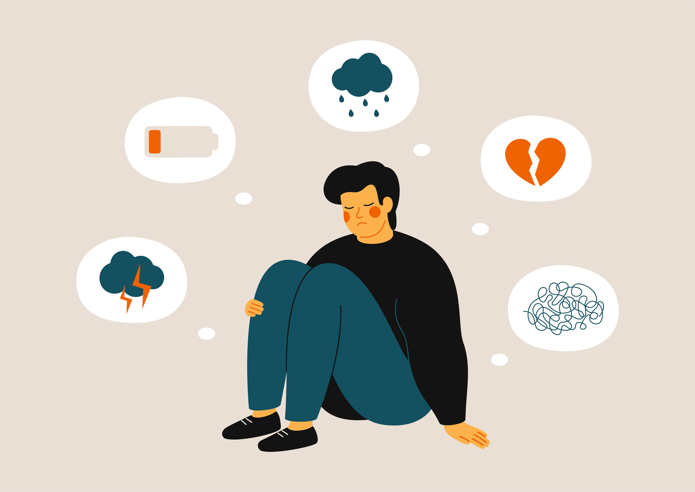

Depressive Disorders

Major Depressive Disorder
Major Depressive Disorder (also referred to as Clinical Depression) is a mood disorder that causes persistent feelings of sadness or loss of interest. It may be described as feeling generally unhappy or miserable. Symptoms must be present for two or more weeks to be diagnosed.
Persistent Depressive Disorder
Persistent Depressive Disorder is a long lasting form of depression where symptoms are present for multiple years but those symptoms are not as intense as they might be in someone with Major Depressive Disorder. However, there might be times in which they also have Major Depressive Disorder.
Seasonal Affective Disorder
Seasonal Affective Disorder is a form of depression that comes and goes with the seasons. Generally, depressive symptoms are present in late fall and winter and they go away with spring and summer, but any season may be a trigger for symptoms.
Symptoms:
- feelings of sadness, emptiness, or hopelessness, or otherwise feeling very pessimistic and negative
- anxiety or feeling on-edge
- restlessness
- anger, irritation, or frustration, even over small issues
- increased engagement in risky behavior or being otherwise impulsive
- not being able to sleep or sleeping too much, feeling fatigued and low on energy
- trouble thinking, concentrating, and making decisions
- difficulties with memory
- slowed speech or movement
- changes in appetite or weight
- unexplained physical aches or pains
- self-isolating and avoiding social interaction, being withdrawn or detached
- feelings of helplessness
- feelings of worthlessness or guilt, focusing of self-blame and mistakes
- inability to meet responsibilities
- loss of interest or pleasure in actitivies
- self-harm or thoughts of self-harm
- suicidal thoughts or behaviors